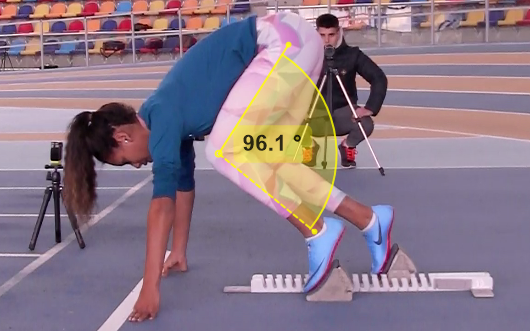
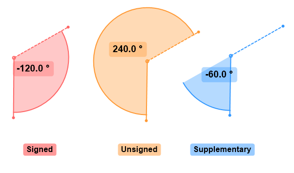
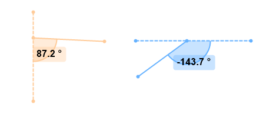

Measuring angles¶
Introduction¶
To measure angles on planes that are not orthogonal to the camera optical axis it is necessary to first perform plane calibration.
The unit for angles can be configured in . The options are Degrees (°) and Radians (rad).
Angle¶
To measure an angle, add an angle object and position its end points.
By default the angle runs counter-clockwise, starting from the dashed leg. The context menu options let you switch between signed or unsigned angle, change from counter-clockwise to clockwise, and switch to supplementary angle.
Note
Always keep in mind that it is not possible to measure angles in arbitrary space from a 2D image. Angles can only be measured when the three points lie on a known 2D plane. This must be either the image plane or the plane calibrated using plane calibration.
Goniometer¶
The goniometer tool lets you measure the extension or flexion of a body segment relative to a referenced anatomical angle or neutral position.
A physical goniometer combines two arms and a protractor. One arm is called the stationary arm and the other is called the movable arm. The protractor part contains multiple graduated rings that allow the physician to pick a reference axis when reading the angle.
Typical plastic goniometer¶
The stationary arm is aligned with the reference segment to materialize the neutral position and the movable arm is aligned with the segment for which we are measuring the range of motion.
Using a goniometer instead of a simple protractor makes it easier to align the protractor with the body segments and helps standardize the way the measurements are made for the range of motion of specific joints.
In MotionON, the goniometer tool has three branches: The stationary arm is the thick plain arm. The movable arm is the one with the arrow at the end. The dashed line is used to define the protractor reference axis in relation to the stationary arm. This branch rotates by 45° increments relatively to the stationary arm.
Knee flexion.¶
Plantar flexion. The reference axis is set perpendicular to the leg.¶
This tool is conceptually similar to a real goniometer with 8 protractor rings but the reading is simplified by showing only one measurement at a time.
Angles relative to image axes¶
The angle-to-horizontal and angle-to-vertical tools let you measure angles relatively to the horizontal or vertical axes of the image. The dashed line represent the reference axis.
